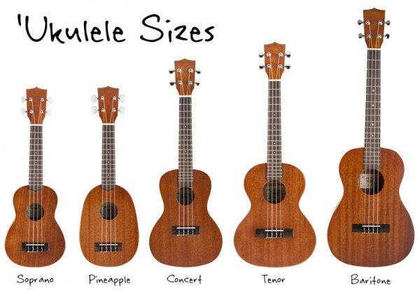

Строительство

Укулеле обычно делают из дерева, хотя были и другие варианты. частично или полностью состоящий из пластика или других материалов. Более дешевые гавайские гитары обычно изготавливают из фанеры или ламината древесины, в некоторых случаях с декой из тоновой древесины , например ели . Более дорогие укулеле сделаны из твердых пород дерева, таких как красное дерево . Традиционно предпочтительной древесиной для укулеле является разновидность акации, эндемичной для Гавайев, называемая коа .
. Обычно укулеле имеет форму восьмерки, аналогичную форме небольшой акустической гитары . Их также часто можно увидеть в нестандартных формах, таких как вырез и овал, обычно называемые укулеле «ананаc», или весло для лодки. форма, а иногда и квадратная форма, часто сделанная из старой деревянной коробки для сигар.
Эти инструменты обычно имеют четыре струны; некоторые струны могут быть объединены в пары в курсах , что дает инструменту в общей сложности шесть или восемь струн. Сами струны изначально были сделаны из кетгута . В современных укулеле используются нейлонполимерные струны с множеством вариаций материала, например фторуглерод , алюминий и нилгут.